Contents
- a] generating Dataset 1
- a] Adaboost for Dataset 1
- a] Plotting for dataset 1
- b] Generating Dataset 2
- b] Adaboost for Dataset 2
- b] Plotting for dataset 2
- c] Generating Dataset 3
- c] Adaboost for Dataset 3
- c] Plotting for dataset 3
- d] Generating Dataset 4
- d] Adaboost for Dataset 4
- d] Plotting for dataset 4
- e] Reading the MNIST database
- e] Generating training and test sets from the MNIST database
- e] Adaboost for MNIST database
- e] Plotting for MNIST database
% CS 763: Assignment 4 % 24th March, 2016 % Authors: Ayush Baid, Niranjan Thakurdesai, Jainesh Doshi clc; clear; close all;
a] generating Dataset 1
N = 2000; % Total number of points X = rand(N,2); % Each row of X corresponds to a point % Label points y = zeros(N,1); y_training = zeros(N/2,1); y_test = zeros(N/2,1); for i=1:size(X,1) if X(i,1)>=0.3 && X(i,1)<=0.7 && X(i,2)>=0.3 && X(i,2)<=0.7 y(i) = 1; % Point lies inside the rectangle bounded by x=0.3, x=0.7, y=0.3 and y=0.7 else y(i) = -1; end end % Divide the dataset into training set and test set seq = randperm(N); X_training = zeros(N/2,2); X_test = zeros(N/2,2); for i=1:N/2 X_training(i,:) = X(seq(i),:); y_training(i,:) = y(seq(i),:); X_test(i,:) = X(seq(N/2+i),:); y_test(i,:) = y(seq(N/2+i),:); end % Plotting the dataset figure() scatter(X_test(y_test>0,1),X_test(y_test>0,2),'b*'); hold on; scatter(X_test(y_test<0,1),X_test(y_test<0,2),'r+'); hold off title('Test points in dataset 1');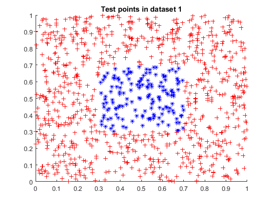
a] Adaboost for Dataset 1
close all;
T = 40; disp('****** Adaboost for Dataset 1 *****'); [ error_training,error_test,i_opt,p_opt,theta_opt,alpha ] = ... adaboost( X_training,X_test,T,y_training,y_test ); % get final classification H = strong_classifier(X_test,i_opt,p_opt,theta_opt,alpha);
****** Adaboost for Dataset 1 ***** Training error of the strong classifier = 0.181000 Error of the strong classifier on the test set = 0.160000 Training error of the strong classifier = 0.181000 Error of the strong classifier on the test set = 0.160000 Training error of the strong classifier = 0.181000 Error of the strong classifier on the test set = 0.160000 Training error of the strong classifier = 0.181000 Error of the strong classifier on the test set = 0.160000 Training error of the strong classifier = 0.181000 Error of the strong classifier on the test set = 0.160000 Training error of the strong classifier = 0.005000 Error of the strong classifier on the test set = 0.006000 Training error of the strong classifier = 0.181000 Error of the strong classifier on the test set = 0.160000 Training error of the strong classifier = 0.005000 Error of the strong classifier on the test set = 0.006000 Training error of the strong classifier = 0.181000 Error of the strong classifier on the test set = 0.160000 Training error of the strong classifier = 0.005000 Error of the strong classifier on the test set = 0.006000 Training error of the strong classifier = 0.181000 Error of the strong classifier on the test set = 0.160000 Training error of the strong classifier = 0.005000 Error of the strong classifier on the test set = 0.006000 Training error of the strong classifier = 0.005000 Error of the strong classifier on the test set = 0.006000 Training error of the strong classifier = 0.005000 Error of the strong classifier on the test set = 0.006000 Training error of the strong classifier = 0.005000 Error of the strong classifier on the test set = 0.006000 Training error of the strong classifier = 0.005000 Error of the strong classifier on the test set = 0.006000 Training error of the strong classifier = 0.005000 Error of the strong classifier on the test set = 0.006000 Training error of the strong classifier = 0.005000 Error of the strong classifier on the test set = 0.010000 Training error of the strong classifier = 0.005000 Error of the strong classifier on the test set = 0.006000 Training error of the strong classifier = 0.004000 Error of the strong classifier on the test set = 0.006000 Training error of the strong classifier = 0.005000 Error of the strong classifier on the test set = 0.006000 Training error of the strong classifier = 0.004000 Error of the strong classifier on the test set = 0.006000 Training error of the strong classifier = 0.005000 Error of the strong classifier on the test set = 0.006000 Training error of the strong classifier = 0.004000 Error of the strong classifier on the test set = 0.002000 Training error of the strong classifier = 0.004000 Error of the strong classifier on the test set = 0.002000 Training error of the strong classifier = 0.004000 Error of the strong classifier on the test set = 0.002000 Training error of the strong classifier = 0.004000 Error of the strong classifier on the test set = 0.002000 Training error of the strong classifier = 0.004000 Error of the strong classifier on the test set = 0.002000 Training error of the strong classifier = 0.004000 Error of the strong classifier on the test set = 0.002000 Training error of the strong classifier = 0.004000 Error of the strong classifier on the test set = 0.002000 Training error of the strong classifier = 0.004000 Error of the strong classifier on the test set = 0.002000 Training error of the strong classifier = 0.004000 Error of the strong classifier on the test set = 0.002000 Training error of the strong classifier = 0.004000 Error of the strong classifier on the test set = 0.002000 Training error of the strong classifier = 0.004000 Error of the strong classifier on the test set = 0.006000 Training error of the strong classifier = 0.004000 Error of the strong classifier on the test set = 0.002000 Training error of the strong classifier = 0.005000 Error of the strong classifier on the test set = 0.010000 Training error of the strong classifier = 0.004000 Error of the strong classifier on the test set = 0.002000 Training error of the strong classifier = 0.005000 Error of the strong classifier on the test set = 0.010000 Training error of the strong classifier = 0.004000 Error of the strong classifier on the test set = 0.002000 Training error of the strong classifier = 0.005000 Error of the strong classifier on the test set = 0.006000
a] Plotting for dataset 1
Plotting the result
figure() scatter(X_test(H>0,1),X_test(H>0,2),'b*'); hold on; scatter(X_test(H<0,1),X_test(H<0,2),'r+'); hold off title('Adaboost result for test points in dataset 1'); figure() hold on; plot(error_training); plot(error_test); hold off; xlabel('iters'); ylabel('error'); legend('Training set error','Test set error'); title('Adaboost for Dataset 1');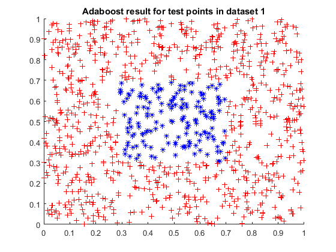 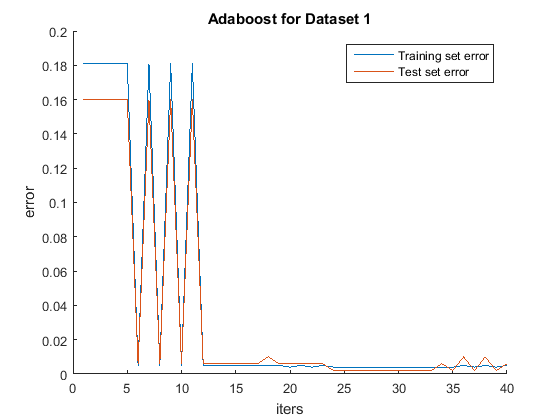
b] Generating Dataset 2
N = 2000; % Total number of points X = rand(N,2); % Each row of X corresponds to a point % Label points y = zeros(N,1); y_training = zeros(N/2,1); y_test = zeros(N/2,1); for i=1:size(X,1) if X(i,1)>=0.3 && X(i,1)<=0.7 && X(i,2)>=0.3 && X(i,2)<=0.7 y(i) = 1; % Point lies inside the rectangle bounded by x=0.3, x=0.7, y=0.3 and y=0.7 elseif (X(i,1)>0.15 && X(i,1)<0.25) || (X(i,1)>0.75 && X(i,1)<0.85) y(i) = 1; elseif (X(i,2)>0.15 && X(i,2)<0.25) || (X(i,2)>0.75 && X(i,2)<0.85) y(i) = 1; else y(i) = -1; end end % Divide the dataset into training set and test set seq = randperm(N); X_training = zeros(N/2,2); X_test = zeros(N/2,2); for i=1:N/2 X_training(i,:) = X(seq(i),:); y_training(i,:) = y(seq(i),:); X_test(i,:) = X(seq(N/2+i),:); y_test(i,:) = y(seq(N/2+i),:); end % Plotting the dataset figure() scatter(X_test(y_test>0,1),X_test(y_test>0,2),'b*'); hold on; scatter(X_test(y_test<0,1),X_test(y_test<0,2),'r+'); hold off title('Test points in dataset 2');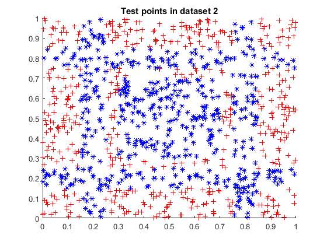
b] Adaboost for Dataset 2
close all;
T = 40; disp('****** Adaboost for Dataset 2 *****'); [ error_training,error_test,i_opt,p_opt,theta_opt,alpha ] = ... adaboost( X_training,X_test,T,y_training,y_test ); % get final classification H = strong_classifier(X_test,i_opt,p_opt,theta_opt,alpha);
****** Adaboost for Dataset 2 ***** Training error of the strong classifier = 0.379000 Error of the strong classifier on the test set = 0.385000 Training error of the strong classifier = 0.379000 Error of the strong classifier on the test set = 0.385000 Training error of the strong classifier = 0.375000 Error of the strong classifier on the test set = 0.369000 Training error of the strong classifier = 0.301000 Error of the strong classifier on the test set = 0.302000 Training error of the strong classifier = 0.281000 Error of the strong classifier on the test set = 0.259000 Training error of the strong classifier = 0.287000 Error of the strong classifier on the test set = 0.288000 Training error of the strong classifier = 0.298000 Error of the strong classifier on the test set = 0.284000 Training error of the strong classifier = 0.210000 Error of the strong classifier on the test set = 0.203000 Training error of the strong classifier = 0.210000 Error of the strong classifier on the test set = 0.203000 Training error of the strong classifier = 0.224000 Error of the strong classifier on the test set = 0.217000 Training error of the strong classifier = 0.274000 Error of the strong classifier on the test set = 0.265000 Training error of the strong classifier = 0.210000 Error of the strong classifier on the test set = 0.203000 Training error of the strong classifier = 0.262000 Error of the strong classifier on the test set = 0.270000 Training error of the strong classifier = 0.118000 Error of the strong classifier on the test set = 0.111000 Training error of the strong classifier = 0.190000 Error of the strong classifier on the test set = 0.187000 Training error of the strong classifier = 0.119000 Error of the strong classifier on the test set = 0.107000 Training error of the strong classifier = 0.188000 Error of the strong classifier on the test set = 0.192000 Training error of the strong classifier = 0.132000 Error of the strong classifier on the test set = 0.127000 Training error of the strong classifier = 0.116000 Error of the strong classifier on the test set = 0.109000 Training error of the strong classifier = 0.111000 Error of the strong classifier on the test set = 0.106000 Training error of the strong classifier = 0.095000 Error of the strong classifier on the test set = 0.088000 Training error of the strong classifier = 0.140000 Error of the strong classifier on the test set = 0.132000 Training error of the strong classifier = 0.105000 Error of the strong classifier on the test set = 0.098000 Training error of the strong classifier = 0.120000 Error of the strong classifier on the test set = 0.116000 Training error of the strong classifier = 0.105000 Error of the strong classifier on the test set = 0.098000 Training error of the strong classifier = 0.108000 Error of the strong classifier on the test set = 0.108000 Training error of the strong classifier = 0.095000 Error of the strong classifier on the test set = 0.088000 Training error of the strong classifier = 0.120000 Error of the strong classifier on the test set = 0.116000 Training error of the strong classifier = 0.095000 Error of the strong classifier on the test set = 0.088000 Training error of the strong classifier = 0.098000 Error of the strong classifier on the test set = 0.086000 Training error of the strong classifier = 0.095000 Error of the strong classifier on the test set = 0.088000 Training error of the strong classifier = 0.095000 Error of the strong classifier on the test set = 0.088000 Training error of the strong classifier = 0.095000 Error of the strong classifier on the test set = 0.088000 Training error of the strong classifier = 0.109000 Error of the strong classifier on the test set = 0.102000 Training error of the strong classifier = 0.095000 Error of the strong classifier on the test set = 0.088000 Training error of the strong classifier = 0.109000 Error of the strong classifier on the test set = 0.102000 Training error of the strong classifier = 0.095000 Error of the strong classifier on the test set = 0.088000 Training error of the strong classifier = 0.106000 Error of the strong classifier on the test set = 0.099000 Training error of the strong classifier = 0.095000 Error of the strong classifier on the test set = 0.088000 Training error of the strong classifier = 0.095000 Error of the strong classifier on the test set = 0.088000
b] Plotting for dataset 2
Plotting the result
figure() scatter(X_test(H>0,1),X_test(H>0,2),'b*'); hold on; scatter(X_test(H<0,1),X_test(H<0,2),'r+'); hold off title('Adaboost result for test points in dataset 2'); figure() hold on; plot(error_training); plot(error_test); hold off; xlabel('iters'); ylabel('error'); legend('Training set error','Test set error'); title('Adaboost for Dataset 3');
 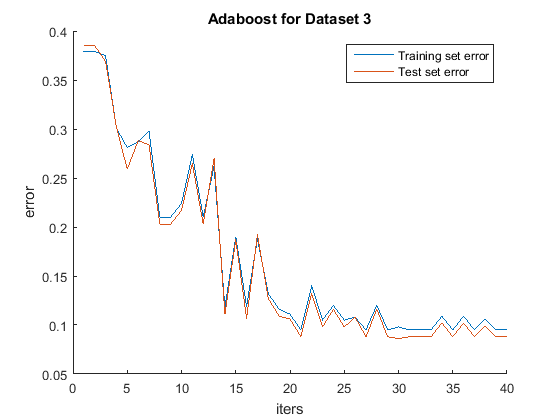
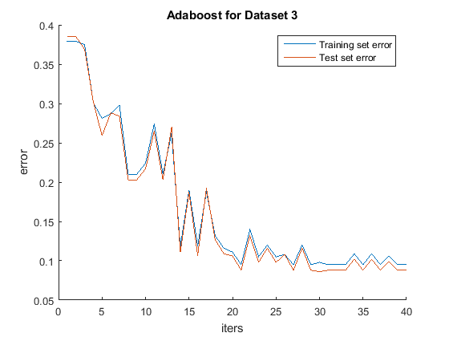 c] Generating Dataset 3
N = 2000; % Total number of points X = 2*randn(N,2); % Each row of X corresponds to a point dist = sqrt(sum(X.^2,2)); % Label points y = -1*ones(N,1); y_training = zeros(N/2,1); y_test = zeros(N/2,1); idx = dist<2; y(idx) = 1; % Divide the dataset into training set and test set seq = randperm(N); X_training = zeros(N/2,2); X_test = zeros(N/2,2); for i=1:N/2 X_training(i,:) = X(seq(i),:); y_training(i,:) = y(seq(i),:); X_test(i,:) = X(seq(N/2+i),:); y_test(i,:) = y(seq(N/2+i),:); end % Plotting the dataset figure() scatter(X_test(y_test>0,1),X_test(y_test>0,2),'b*'); hold on; scatter(X_test(y_test<0,1),X_test(y_test<0,2),'r+'); hold off title('Test points in dataset 3');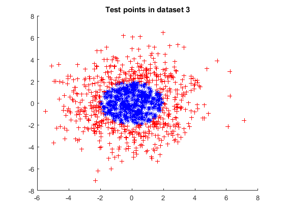
c] Adaboost for Dataset 3
close all;
T = 40; disp('****** Adaboost for Dataset 3 *****'); [ error_training,error_test,i_opt,p_opt,theta_opt,alpha ] = ... adaboost( X_training,X_test,T,y_training,y_test ); % get final classification H = strong_classifier(X_test,i_opt,p_opt,theta_opt,alpha);
****** Adaboost for Dataset 3 ***** Training error of the strong classifier = 0.396000 Error of the strong classifier on the test set = 0.415000 Training error of the strong classifier = 0.413000 Error of the strong classifier on the test set = 0.392000 Training error of the strong classifier = 0.239000 Error of the strong classifier on the test set = 0.200000 Training error of the strong classifier = 0.396000 Error of the strong classifier on the test set = 0.415000 Training error of the strong classifier = 0.158000 Error of the strong classifier on the test set = 0.158000 Training error of the strong classifier = 0.301000 Error of the strong classifier on the test set = 0.343000 Training error of the strong classifier = 0.092000 Error of the strong classifier on the test set = 0.093000 Training error of the strong classifier = 0.075000 Error of the strong classifier on the test set = 0.079000 Training error of the strong classifier = 0.199000 Error of the strong classifier on the test set = 0.168000 Training error of the strong classifier = 0.092000 Error of the strong classifier on the test set = 0.093000 Training error of the strong classifier = 0.125000 Error of the strong classifier on the test set = 0.094000 Training error of the strong classifier = 0.058000 Error of the strong classifier on the test set = 0.059000 Training error of the strong classifier = 0.055000 Error of the strong classifier on the test set = 0.059000 Training error of the strong classifier = 0.058000 Error of the strong classifier on the test set = 0.059000 Training error of the strong classifier = 0.055000 Error of the strong classifier on the test set = 0.059000 Training error of the strong classifier = 0.058000 Error of the strong classifier on the test set = 0.059000 Training error of the strong classifier = 0.055000 Error of the strong classifier on the test set = 0.059000 Training error of the strong classifier = 0.046000 Error of the strong classifier on the test set = 0.061000 Training error of the strong classifier = 0.055000 Error of the strong classifier on the test set = 0.059000 Training error of the strong classifier = 0.049000 Error of the strong classifier on the test set = 0.062000 Training error of the strong classifier = 0.056000 Error of the strong classifier on the test set = 0.059000 Training error of the strong classifier = 0.039000 Error of the strong classifier on the test set = 0.045000 Training error of the strong classifier = 0.058000 Error of the strong classifier on the test set = 0.059000 Training error of the strong classifier = 0.039000 Error of the strong classifier on the test set = 0.045000 Training error of the strong classifier = 0.048000 Error of the strong classifier on the test set = 0.061000 Training error of the strong classifier = 0.036000 Error of the strong classifier on the test set = 0.047000 Training error of the strong classifier = 0.049000 Error of the strong classifier on the test set = 0.062000 Training error of the strong classifier = 0.036000 Error of the strong classifier on the test set = 0.040000 Training error of the strong classifier = 0.036000 Error of the strong classifier on the test set = 0.040000 Training error of the strong classifier = 0.046000 Error of the strong classifier on the test set = 0.057000 Training error of the strong classifier = 0.030000 Error of the strong classifier on the test set = 0.039000 Training error of the strong classifier = 0.049000 Error of the strong classifier on the test set = 0.060000 Training error of the strong classifier = 0.031000 Error of the strong classifier on the test set = 0.040000 Training error of the strong classifier = 0.039000 Error of the strong classifier on the test set = 0.043000 Training error of the strong classifier = 0.031000 Error of the strong classifier on the test set = 0.040000 Training error of the strong classifier = 0.039000 Error of the strong classifier on the test set = 0.043000 Training error of the strong classifier = 0.037000 Error of the strong classifier on the test set = 0.046000 Training error of the strong classifier = 0.035000 Error of the strong classifier on the test set = 0.045000 Training error of the strong classifier = 0.034000 Error of the strong classifier on the test set = 0.048000 Training error of the strong classifier = 0.035000 Error of the strong classifier on the test set = 0.045000
c] Plotting for dataset 3
Plotting the result
figure() scatter(X_test(H>0,1),X_test(H>0,2),'b*'); hold on; scatter(X_test(H<0,1),X_test(H<0,2),'r+'); hold off title('Adaboost result for test points in dataset 3'); figure() hold on; plot(error_training); plot(error_test); hold off; xlabel('iters'); ylabel('error'); legend('Training set error','Test set error'); title('Adaboost for Dataset 3');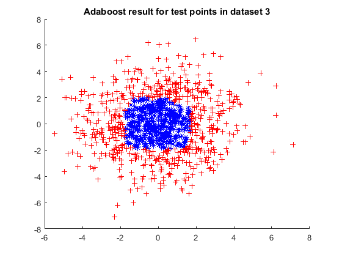 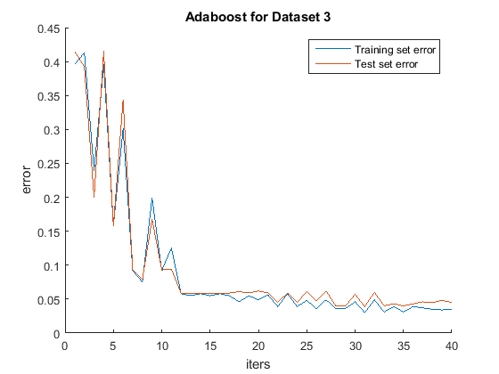
d] Generating Dataset 4
N = 2000; % Total number of points X = 2*randn(N,2); % Each row of X corresponds to a point dist = sqrt(sum(X.^2,2)); % Label points y = -1*ones(N,1); y_training = zeros(N/2,1); y_test = zeros(N/2,1); idx = dist<2 | (dist>2.5 & dist<3); y(idx) = 1; % Divide the dataset into training set and test set seq = randperm(N); X_training = zeros(N/2,2); X_test = zeros(N/2,2); for i=1:N/2 X_training(i,:) = X(seq(i),:); y_training(i,:) = y(seq(i),:); X_test(i,:) = X(seq(N/2+i),:); y_test(i,:) = y(seq(N/2+i),:); end % Plotting the dataset figure() scatter(X_test(y_test>0,1),X_test(y_test>0,2),'b*'); hold on; scatter(X_test(y_test<0,1),X_test(y_test<0,2),'r+'); hold off title('Test points in dataset 4');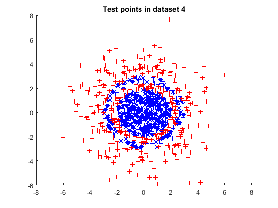
d] Adaboost for Dataset 4
close all;
T = 40; disp('****** Adaboost for Dataset 4 *****'); [ error_training,error_test,i_opt,p_opt,theta_opt,alpha ] = ... adaboost( X_training,X_test,T,y_training,y_test ); % get final classification H = strong_classifier(X_test,i_opt,p_opt,theta_opt,alpha);
****** Adaboost for Dataset 4 ***** Training error of the strong classifier = 0.364000 Error of the strong classifier on the test set = 0.376000 Training error of the strong classifier = 0.364000 Error of the strong classifier on the test set = 0.376000 Training error of the strong classifier = 0.283000 Error of the strong classifier on the test set = 0.297000 Training error of the strong classifier = 0.320000 Error of the strong classifier on the test set = 0.338000 Training error of the strong classifier = 0.320000 Error of the strong classifier on the test set = 0.314000 Training error of the strong classifier = 0.242000 Error of the strong classifier on the test set = 0.282000 Training error of the strong classifier = 0.248000 Error of the strong classifier on the test set = 0.263000 Training error of the strong classifier = 0.276000 Error of the strong classifier on the test set = 0.285000 Training error of the strong classifier = 0.205000 Error of the strong classifier on the test set = 0.217000 Training error of the strong classifier = 0.255000 Error of the strong classifier on the test set = 0.266000 Training error of the strong classifier = 0.276000 Error of the strong classifier on the test set = 0.278000 Training error of the strong classifier = 0.244000 Error of the strong classifier on the test set = 0.257000 Training error of the strong classifier = 0.242000 Error of the strong classifier on the test set = 0.247000 Training error of the strong classifier = 0.210000 Error of the strong classifier on the test set = 0.226000 Training error of the strong classifier = 0.210000 Error of the strong classifier on the test set = 0.222000 Training error of the strong classifier = 0.210000 Error of the strong classifier on the test set = 0.222000 Training error of the strong classifier = 0.210000 Error of the strong classifier on the test set = 0.222000 Training error of the strong classifier = 0.241000 Error of the strong classifier on the test set = 0.252000 Training error of the strong classifier = 0.170000 Error of the strong classifier on the test set = 0.174000 Training error of the strong classifier = 0.210000 Error of the strong classifier on the test set = 0.222000 Training error of the strong classifier = 0.210000 Error of the strong classifier on the test set = 0.222000 Training error of the strong classifier = 0.216000 Error of the strong classifier on the test set = 0.224000 Training error of the strong classifier = 0.210000 Error of the strong classifier on the test set = 0.222000 Training error of the strong classifier = 0.194000 Error of the strong classifier on the test set = 0.209000 Training error of the strong classifier = 0.186000 Error of the strong classifier on the test set = 0.203000 Training error of the strong classifier = 0.174000 Error of the strong classifier on the test set = 0.180000 Training error of the strong classifier = 0.166000 Error of the strong classifier on the test set = 0.174000 Training error of the strong classifier = 0.174000 Error of the strong classifier on the test set = 0.180000 Training error of the strong classifier = 0.166000 Error of the strong classifier on the test set = 0.174000 Training error of the strong classifier = 0.174000 Error of the strong classifier on the test set = 0.180000 Training error of the strong classifier = 0.166000 Error of the strong classifier on the test set = 0.174000 Training error of the strong classifier = 0.174000 Error of the strong classifier on the test set = 0.180000 Training error of the strong classifier = 0.166000 Error of the strong classifier on the test set = 0.174000 Training error of the strong classifier = 0.174000 Error of the strong classifier on the test set = 0.180000 Training error of the strong classifier = 0.166000 Error of the strong classifier on the test set = 0.174000 Training error of the strong classifier = 0.174000 Error of the strong classifier on the test set = 0.180000 Training error of the strong classifier = 0.174000 Error of the strong classifier on the test set = 0.181000 Training error of the strong classifier = 0.170000 Error of the strong classifier on the test set = 0.179000 Training error of the strong classifier = 0.173000 Error of the strong classifier on the test set = 0.180000 Training error of the strong classifier = 0.172000 Error of the strong classifier on the test set = 0.181000
d] Plotting for dataset 4
Plotting the result
figure() scatter(X_test(H>0,1),X_test(H>0,2),'b*'); hold on; scatter(X_test(H<0,1),X_test(H<0,2),'r+'); hold off title('Adaboost result for test points in dataset 4'); figure() hold on; plot(error_training); plot(error_test); hold off; xlabel('iters'); ylabel('error'); legend('Training set error','Test set error'); title('Adaboost for Dataset 4'); % For the fourth dataset, the test error is higher compared to the other % datasets. This is because the points labelled '1' in the fourth dataset % are in a circular/annular region whereas our weak classifiers are % horizontal/vertical lines. Due to this nature of our weak classifiers, % points inside the outer boundary of the annular region but outside the circular region are % erroneously labelled as '1'. To remedy this, we can use different weak % classifiers as follows: if the distance of the point is less than a % certain threshold, label it as '1', else label it as '0'.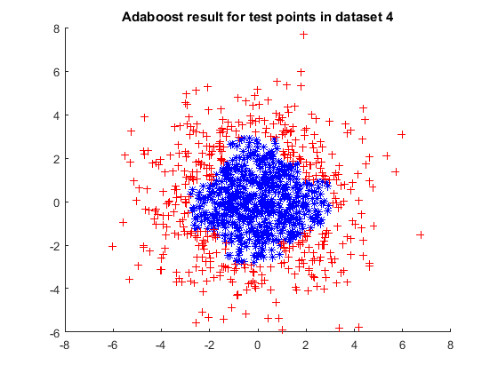 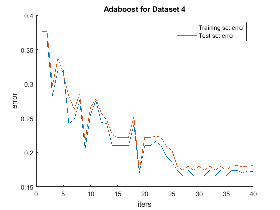
e] Reading the MNIST database
[I,labels,I_test,labels_test] = readMNIST;
e] Generating training and test sets from the MNIST database
sample_img = I_test{1};
vecSize = size(sample_img,1)*size(sample_img,2);
N_test = length(I_test); % Total number of test images
N_training = 5000; % Total number of training images
% Label test points
y_test = -1*ones(N_test,1);
y_test(labels_test==2)=1;
% Label training points
y_training = -1*ones(N_training,1);
y_training(labels(1:N_training)==2)=1;
% Divide the dataset into training set and test set
X_training = zeros(N_training,vecSize);
X_test = zeros(N_test,vecSize);
for i=1:N_test
sample_img = I_test{i};
X_test(i,:) = sample_img(:)';
end
for i=1:N_training
sample_img = I{i};
X_training(i,:) = sample_img(:)';
end
e] Adaboost for MNIST database
T = 40; disp('****** Adaboost for MNIST dataset *****'); [ error_training,error_test,i_opt,p_opt,theta_opt,alpha ] = ... adaboost( X_training,X_test,T,y_training,y_test ); % get final classification H = strong_classifier(X_test,i_opt,p_opt,theta_opt,alpha);
****** Adaboost for MNIST dataset ***** Training error of the strong classifier = 0.089200 Error of the strong classifier on the test set = 0.090100 Training error of the strong classifier = 0.089200 Error of the strong classifier on the test set = 0.090100 Training error of the strong classifier = 0.089200 Error of the strong classifier on the test set = 0.090100 Training error of the strong classifier = 0.069600 Error of the strong classifier on the test set = 0.076800 Training error of the strong classifier = 0.078200 Error of the strong classifier on the test set = 0.080000 Training error of the strong classifier = 0.053400 Error of the strong classifier on the test set = 0.058500 Training error of the strong classifier = 0.053600 Error of the strong classifier on the test set = 0.058700 Training error of the strong classifier = 0.050400 Error of the strong classifier on the test set = 0.054100 Training error of the strong classifier = 0.048200 Error of the strong classifier on the test set = 0.052500 Training error of the strong classifier = 0.046400 Error of the strong classifier on the test set = 0.052400 Training error of the strong classifier = 0.046800 Error of the strong classifier on the test set = 0.049500 Training error of the strong classifier = 0.043400 Error of the strong classifier on the test set = 0.048500 Training error of the strong classifier = 0.045200 Error of the strong classifier on the test set = 0.049500 Training error of the strong classifier = 0.040600 Error of the strong classifier on the test set = 0.044800 Training error of the strong classifier = 0.042600 Error of the strong classifier on the test set = 0.044500 Training error of the strong classifier = 0.038200 Error of the strong classifier on the test set = 0.043200 Training error of the strong classifier = 0.041400 Error of the strong classifier on the test set = 0.046900 Training error of the strong classifier = 0.038800 Error of the strong classifier on the test set = 0.043200 Training error of the strong classifier = 0.039400 Error of the strong classifier on the test set = 0.042600 Training error of the strong classifier = 0.036200 Error of the strong classifier on the test set = 0.040300 Training error of the strong classifier = 0.037800 Error of the strong classifier on the test set = 0.041700 Training error of the strong classifier = 0.035800 Error of the strong classifier on the test set = 0.041500 Training error of the strong classifier = 0.034800 Error of the strong classifier on the test set = 0.039700 Training error of the strong classifier = 0.035000 Error of the strong classifier on the test set = 0.038500 Training error of the strong classifier = 0.036400 Error of the strong classifier on the test set = 0.039400 Training error of the strong classifier = 0.032800 Error of the strong classifier on the test set = 0.037700 Training error of the strong classifier = 0.032600 Error of the strong classifier on the test set = 0.037400 Training error of the strong classifier = 0.032400 Error of the strong classifier on the test set = 0.038700 Training error of the strong classifier = 0.032200 Error of the strong classifier on the test set = 0.037800 Training error of the strong classifier = 0.033200 Error of the strong classifier on the test set = 0.038500 Training error of the strong classifier = 0.031200 Error of the strong classifier on the test set = 0.036600 Training error of the strong classifier = 0.032200 Error of the strong classifier on the test set = 0.037600 Training error of the strong classifier = 0.029600 Error of the strong classifier on the test set = 0.035700 Training error of the strong classifier = 0.031000 Error of the strong classifier on the test set = 0.036700 Training error of the strong classifier = 0.029200 Error of the strong classifier on the test set = 0.036600 Training error of the strong classifier = 0.029200 Error of the strong classifier on the test set = 0.036700 Training error of the strong classifier = 0.027200 Error of the strong classifier on the test set = 0.036200 Training error of the strong classifier = 0.030600 Error of the strong classifier on the test set = 0.037200 Training error of the strong classifier = 0.029400 Error of the strong classifier on the test set = 0.036300 Training error of the strong classifier = 0.029400 Error of the strong classifier on the test set = 0.036100
e] Plotting for MNIST database
figure() hold on; plot(error_training); plot(error_test); hold off; xlabel('iters'); ylabel('error'); legend('Training set error','Test set error'); title('Adaboost for MNIST');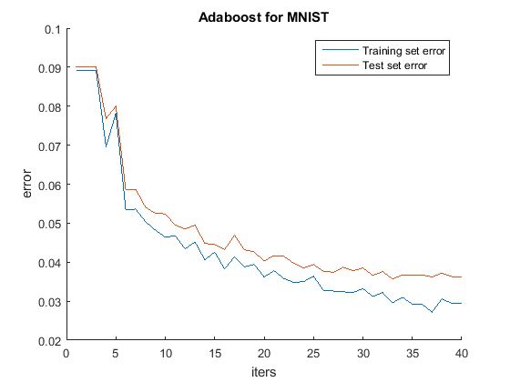